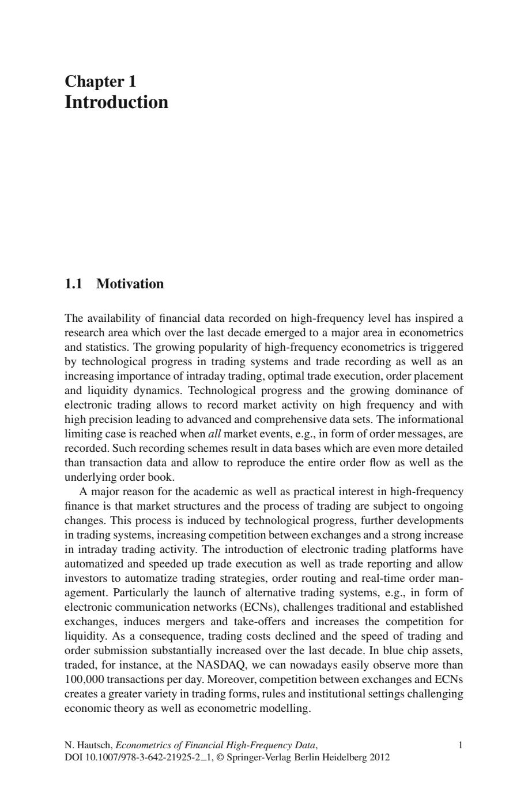
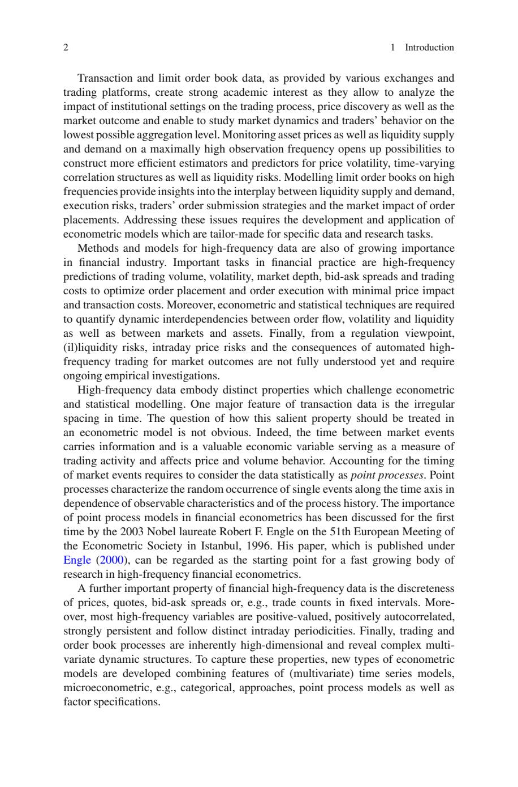
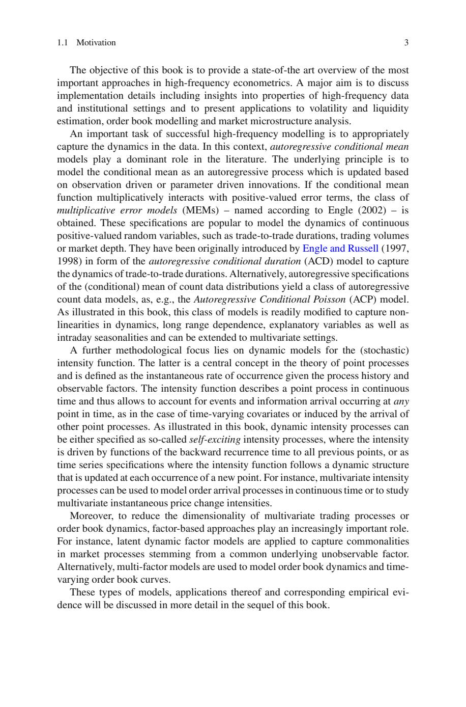
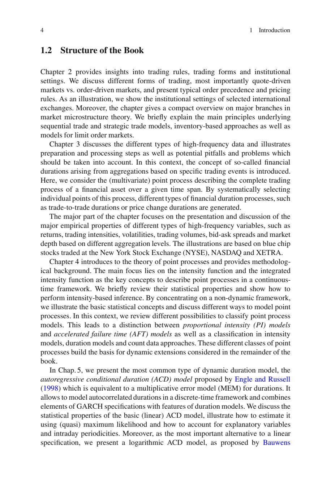
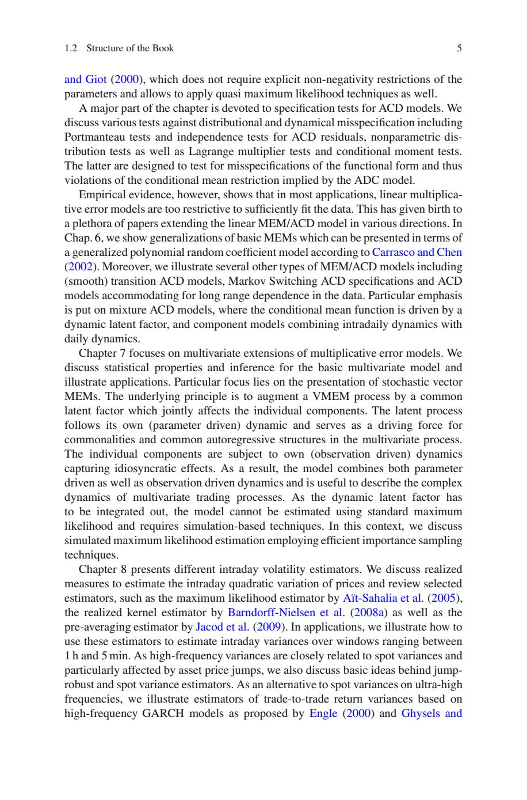
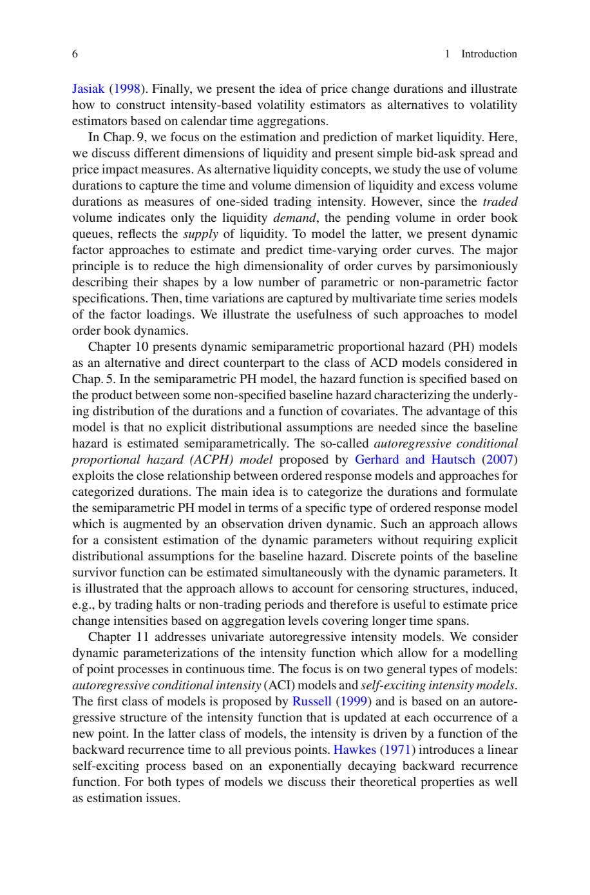
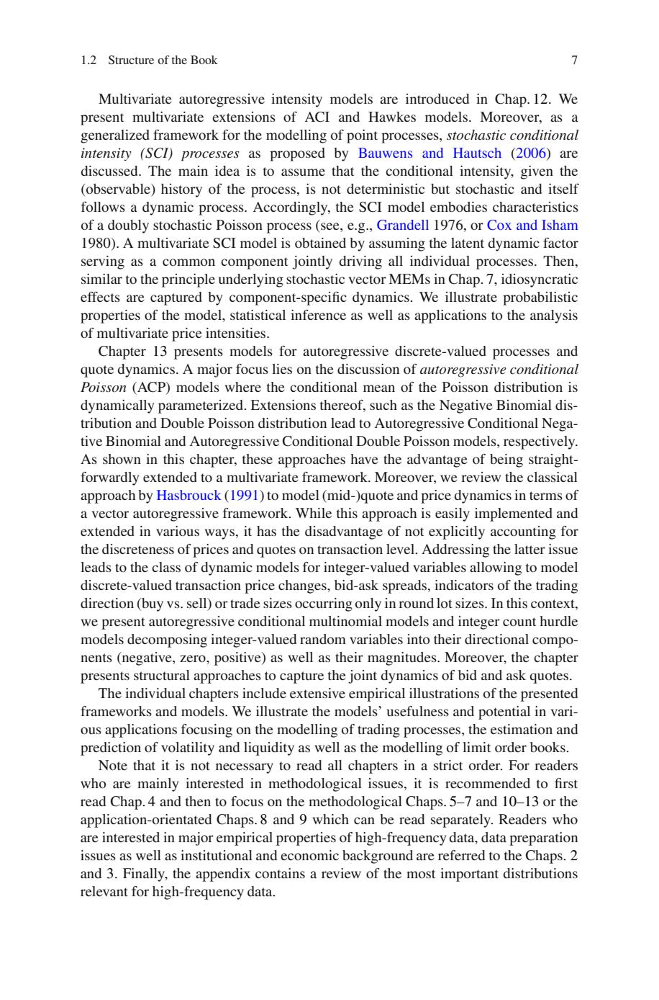
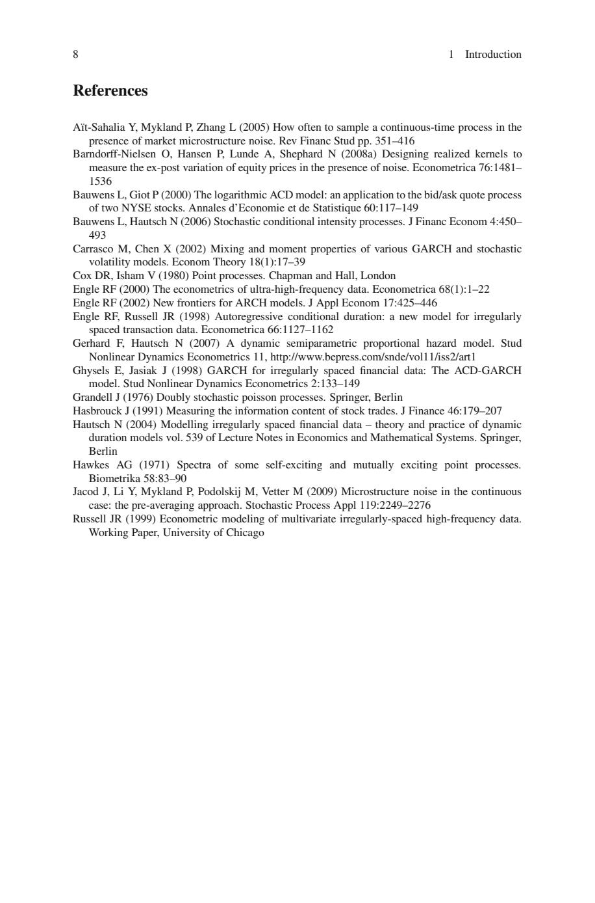

第1章: 導入（Introduction）#
- 元PDFページ: 16-23
- 書籍上のページ: 1-8
- 原文抽出テキスト:
raw_text/ch01_introduction.txt
注意: これは日本語学習版です。章・節の日本語要約、重要概念、読み方を追加しています。本文の完全逐語訳ではありません。数式・図表・表はページ画像レンダーで視覚的に確認できるようにしています。原文抽出は Poppler
pdftotext -layoutに基づくため、数式記号は一部崩れる可能性があります。
この章の位置づけ#
本書全体の導入章です。金融高頻度データが通常の低頻度時系列と何が違うのか、なぜ専用の計量モデルが必要なのかを動機づけます。
重要概念#
高頻度データ, 市場マイクロストラクチャー, 不規則時点データ, event time, duration, liquidity, volatility
サブセクション別の日本語要約#
1.1 Motivation#
日本語見出し: 動機
市場取引データはイベント時刻、約定価格、気配、注文量などが不規則かつ高密度に観測される。通常の等間隔時系列モデルだけでは、取引頻度、流動性、価格形成、ボラティリティの時間構造を十分に扱えないことを説明します。
1.2 Structure of the Book#
日本語見出し: 本書の構成
市場マイクロストラクチャー、データ処理、点過程、duration/MEM、volatility、liquidity、intensity、quote dynamics へ進む全体の流れを示します。
学習上の読み方#
- まずこの日本語要約で章の地図を把握する。
- 次にページ画像で数式・図表・表の形を確認する。
- 最後に原文抽出テキストで細部を読む。
- 数式記号が文字化けしている場合は、必ず直後のページ画像を参照する。
原文ページ別抽出とページ画像#
PDF page 16 / printed page 1#
Chapter 1
Introduction
1.1 Motivation
The availability of financial data recorded on high-frequency level has inspired a
research area which over the last decade emerged to a major area in econometrics
and statistics. The growing popularity of high-frequency econometrics is triggered
by technological progress in trading systems and trade recording as well as an
increasing importance of intraday trading, optimal trade execution, order placement
and liquidity dynamics. Technological progress and the growing dominance of
electronic trading allows to record market activity on high frequency and with
high precision leading to advanced and comprehensive data sets. The informational
limiting case is reached when all market events, e.g., in form of order messages, are
recorded. Such recording schemes result in data bases which are even more detailed
than transaction data and allow to reproduce the entire order flow as well as the
underlying order book.
A major reason for the academic as well as practical interest in high-frequency
finance is that market structures and the process of trading are subject to ongoing
changes. This process is induced by technological progress, further developments
in trading systems, increasing competition between exchanges and a strong increase
in intraday trading activity. The introduction of electronic trading platforms have
automatized and speeded up trade execution as well as trade reporting and allow
investors to automatize trading strategies, order routing and real-time order man-
agement. Particularly the launch of alternative trading systems, e.g., in form of
electronic communication networks (ECNs), challenges traditional and established
exchanges, induces mergers and take-offers and increases the competition for
liquidity. As a consequence, trading costs declined and the speed of trading and
order submission substantially increased over the last decade. In blue chip assets,
traded, for instance, at the NASDAQ, we can nowadays easily observe more than
100;000 transactions per day. Moreover, competition between exchanges and ECNs
creates a greater variety in trading forms, rules and institutional settings challenging
economic theory as well as econometric modelling.
N. Hautsch, Econometrics of Financial High-Frequency Data, 1
DOI 10.1007/978-3-642-21925-2 1, © Springer-Verlag Berlin Heidelberg 2012{kind=link}

PDF page 17 / printed page 2#
2 1 Introduction
Transaction and limit order book data, as provided by various exchanges and
trading platforms, create strong academic interest as they allow to analyze the
impact of institutional settings on the trading process, price discovery as well as the
market outcome and enable to study market dynamics and traders’ behavior on the
lowest possible aggregation level. Monitoring asset prices as well as liquidity supply
and demand on a maximally high observation frequency opens up possibilities to
construct more efficient estimators and predictors for price volatility, time-varying
correlation structures as well as liquidity risks. Modelling limit order books on high
frequencies provide insights into the interplay between liquidity supply and demand,
execution risks, traders’ order submission strategies and the market impact of order
placements. Addressing these issues requires the development and application of
econometric models which are tailor-made for specific data and research tasks.
Methods and models for high-frequency data are also of growing importance
in financial industry. Important tasks in financial practice are high-frequency
predictions of trading volume, volatility, market depth, bid-ask spreads and trading
costs to optimize order placement and order execution with minimal price impact
and transaction costs. Moreover, econometric and statistical techniques are required
to quantify dynamic interdependencies between order flow, volatility and liquidity
as well as between markets and assets. Finally, from a regulation viewpoint,
(il)liquidity risks, intraday price risks and the consequences of automated high-
frequency trading for market outcomes are not fully understood yet and require
ongoing empirical investigations.
High-frequency data embody distinct properties which challenge econometric
and statistical modelling. One major feature of transaction data is the irregular
spacing in time. The question of how this salient property should be treated in
an econometric model is not obvious. Indeed, the time between market events
carries information and is a valuable economic variable serving as a measure of
trading activity and affects price and volume behavior. Accounting for the timing
of market events requires to consider the data statistically as point processes. Point
processes characterize the random occurrence of single events along the time axis in
dependence of observable characteristics and of the process history. The importance
of point process models in financial econometrics has been discussed for the first
time by the 2003 Nobel laureate Robert F. Engle on the 51th European Meeting of
the Econometric Society in Istanbul, 1996. His paper, which is published under
Engle (2000), can be regarded as the starting point for a fast growing body of
research in high-frequency financial econometrics.
A further important property of financial high-frequency data is the discreteness
of prices, quotes, bid-ask spreads or, e.g., trade counts in fixed intervals. More-
over, most high-frequency variables are positive-valued, positively autocorrelated,
strongly persistent and follow distinct intraday periodicities. Finally, trading and
order book processes are inherently high-dimensional and reveal complex multi-
variate dynamic structures. To capture these properties, new types of econometric
models are developed combining features of (multivariate) time series models,
microeconometric, e.g., categorical, approaches, point process models as well as
factor specifications.{kind=link}

PDF page 18 / printed page 3#
1.1 Motivation 3
The objective of this book is to provide a state-of-the art overview of the most
important approaches in high-frequency econometrics. A major aim is to discuss
implementation details including insights into properties of high-frequency data
and institutional settings and to present applications to volatility and liquidity
estimation, order book modelling and market microstructure analysis.
An important task of successful high-frequency modelling is to appropriately
capture the dynamics in the data. In this context, autoregressive conditional mean
models play a dominant role in the literature. The underlying principle is to
model the conditional mean as an autoregressive process which is updated based
on observation driven or parameter driven innovations. If the conditional mean
function multiplicatively interacts with positive-valued error terms, the class of
multiplicative error models (MEMs) – named according to Engle (2002) – is
obtained. These specifications are popular to model the dynamics of continuous
positive-valued random variables, such as trade-to-trade durations, trading volumes
or market depth. They have been originally introduced by Engle and Russell (1997,
1998) in form of the autoregressive conditional duration (ACD) model to capture
the dynamics of trade-to-trade durations. Alternatively, autoregressive specifications
of the (conditional) mean of count data distributions yield a class of autoregressive
count data models, as, e.g., the Autoregressive Conditional Poisson (ACP) model.
As illustrated in this book, this class of models is readily modified to capture non-
linearities in dynamics, long range dependence, explanatory variables as well as
intraday seasonalities and can be extended to multivariate settings.
A further methodological focus lies on dynamic models for the (stochastic)
intensity function. The latter is a central concept in the theory of point processes
and is defined as the instantaneous rate of occurrence given the process history and
observable factors. The intensity function describes a point process in continuous
time and thus allows to account for events and information arrival occurring at any
point in time, as in the case of time-varying covariates or induced by the arrival of
other point processes. As illustrated in this book, dynamic intensity processes can
be either specified as so-called self-exciting intensity processes, where the intensity
is driven by functions of the backward recurrence time to all previous points, or as
time series specifications where the intensity function follows a dynamic structure
that is updated at each occurrence of a new point. For instance, multivariate intensity
processes can be used to model order arrival processes in continuous time or to study
multivariate instantaneous price change intensities.
Moreover, to reduce the dimensionality of multivariate trading processes or
order book dynamics, factor-based approaches play an increasingly important role.
For instance, latent dynamic factor models are applied to capture commonalities
in market processes stemming from a common underlying unobservable factor.
Alternatively, multi-factor models are used to model order book dynamics and time-
varying order book curves.
These types of models, applications thereof and corresponding empirical evi-
dence will be discussed in more detail in the sequel of this book.{kind=link}

PDF page 19 / printed page 4#
4 1 Introduction
1.2 Structure of the Book
Chapter 2 provides insights into trading rules, trading forms and institutional
settings. We discuss different forms of trading, most importantly quote-driven
markets vs. order-driven markets, and present typical order precedence and pricing
rules. As an illustration, we show the institutional settings of selected international
exchanges. Moreover, the chapter gives a compact overview on major branches in
market microstructure theory. We briefly explain the main principles underlying
sequential trade and strategic trade models, inventory-based approaches as well as
models for limit order markets.
Chapter 3 discusses the different types of high-frequency data and illustrates
preparation and processing steps as well as potential pitfalls and problems which
should be taken into account. In this context, the concept of so-called financial
durations arising from aggregations based on specific trading events is introduced.
Here, we consider the (multivariate) point process describing the complete trading
process of a financial asset over a given time span. By systematically selecting
individual points of this process, different types of financial duration processes, such
as trade-to-trade durations or price change durations are generated.
The major part of the chapter focuses on the presentation and discussion of the
major empirical properties of different types of high-frequency variables, such as
returns, trading intensities, volatilities, trading volumes, bid-ask spreads and market
depth based on different aggregation levels. The illustrations are based on blue chip
stocks traded at the New York Stock Exchange (NYSE), NASDAQ and XETRA.
Chapter 4 introduces to the theory of point processes and provides methodolog-
ical background. The main focus lies on the intensity function and the integrated
intensity function as the key concepts to describe point processes in a continuous-
time framework. We briefly review their statistical properties and show how to
perform intensity-based inference. By concentrating on a non-dynamic framework,
we illustrate the basic statistical concepts and discuss different ways to model point
processes. In this context, we review different possibilities to classify point process
models. This leads to a distinction between proportional intensity (PI) models
and accelerated failure time (AFT) models as well as a classification in intensity
models, duration models and count data approaches. These different classes of point
processes build the basis for dynamic extensions considered in the remainder of the
book.
In Chap. 5, we present the most common type of dynamic duration model, the
autoregressive conditional duration (ACD) model proposed by Engle and Russell
(1998) which is equivalent to a multiplicative error model (MEM) for durations. It
allows to model autocorrelated durations in a discrete-time framework and combines
elements of GARCH specifications with features of duration models. We discuss the
statistical properties of the basic (linear) ACD model, illustrate how to estimate it
using (quasi) maximum likelihood and how to account for explanatory variables
and intraday periodicities. Moreover, as the most important alternative to a linear
specification, we present a logarithmic ACD model, as proposed by Bauwens{kind=link}

PDF page 20 / printed page 5#
1.2 Structure of the Book 5
and Giot (2000), which does not require explicit non-negativity restrictions of the
parameters and allows to apply quasi maximum likelihood techniques as well.
A major part of the chapter is devoted to specification tests for ACD models. We
discuss various tests against distributional and dynamical misspecification including
Portmanteau tests and independence tests for ACD residuals, nonparametric dis-
tribution tests as well as Lagrange multiplier tests and conditional moment tests.
The latter are designed to test for misspecifications of the functional form and thus
violations of the conditional mean restriction implied by the ADC model.
Empirical evidence, however, shows that in most applications, linear multiplica-
tive error models are too restrictive to sufficiently fit the data. This has given birth to
a plethora of papers extending the linear MEM/ACD model in various directions. In
Chap. 6, we show generalizations of basic MEMs which can be presented in terms of
a generalized polynomial random coefficient model according to Carrasco and Chen
(2002). Moreover, we illustrate several other types of MEM/ACD models including
(smooth) transition ACD models, Markov Switching ACD specifications and ACD
models accommodating for long range dependence in the data. Particular emphasis
is put on mixture ACD models, where the conditional mean function is driven by a
dynamic latent factor, and component models combining intradaily dynamics with
daily dynamics.
Chapter 7 focuses on multivariate extensions of multiplicative error models. We
discuss statistical properties and inference for the basic multivariate model and
illustrate applications. Particular focus lies on the presentation of stochastic vector
MEMs. The underlying principle is to augment a VMEM process by a common
latent factor which jointly affects the individual components. The latent process
follows its own (parameter driven) dynamic and serves as a driving force for
commonalities and common autoregressive structures in the multivariate process.
The individual components are subject to own (observation driven) dynamics
capturing idiosyncratic effects. As a result, the model combines both parameter
driven as well as observation driven dynamics and is useful to describe the complex
dynamics of multivariate trading processes. As the dynamic latent factor has
to be integrated out, the model cannot be estimated using standard maximum
likelihood and requires simulation-based techniques. In this context, we discuss
simulated maximum likelihood estimation employing efficient importance sampling
techniques.
Chapter 8 presents different intraday volatility estimators. We discuss realized
measures to estimate the intraday quadratic variation of prices and review selected
estimators, such as the maximum likelihood estimator by Aı̈t-Sahalia et al. (2005),
the realized kernel estimator by Barndorff-Nielsen et al. (2008a) as well as the
pre-averaging estimator by Jacod et al. (2009). In applications, we illustrate how to
use these estimators to estimate intraday variances over windows ranging between
1 h and 5 min. As high-frequency variances are closely related to spot variances and
particularly affected by asset price jumps, we also discuss basic ideas behind jump-
robust and spot variance estimators. As an alternative to spot variances on ultra-high
frequencies, we illustrate estimators of trade-to-trade return variances based on
high-frequency GARCH models as proposed by Engle (2000) and Ghysels and{kind=link}

PDF page 21 / printed page 6#
6 1 Introduction
Jasiak (1998). Finally, we present the idea of price change durations and illustrate
how to construct intensity-based volatility estimators as alternatives to volatility
estimators based on calendar time aggregations.
In Chap. 9, we focus on the estimation and prediction of market liquidity. Here,
we discuss different dimensions of liquidity and present simple bid-ask spread and
price impact measures. As alternative liquidity concepts, we study the use of volume
durations to capture the time and volume dimension of liquidity and excess volume
durations as measures of one-sided trading intensity. However, since the traded
volume indicates only the liquidity demand, the pending volume in order book
queues, reflects the supply of liquidity. To model the latter, we present dynamic
factor approaches to estimate and predict time-varying order curves. The major
principle is to reduce the high dimensionality of order curves by parsimoniously
describing their shapes by a low number of parametric or non-parametric factor
specifications. Then, time variations are captured by multivariate time series models
of the factor loadings. We illustrate the usefulness of such approaches to model
order book dynamics.
Chapter 10 presents dynamic semiparametric proportional hazard (PH) models
as an alternative and direct counterpart to the class of ACD models considered in
Chap. 5. In the semiparametric PH model, the hazard function is specified based on
the product between some non-specified baseline hazard characterizing the underly-
ing distribution of the durations and a function of covariates. The advantage of this
model is that no explicit distributional assumptions are needed since the baseline
hazard is estimated semiparametrically. The so-called autoregressive conditional
proportional hazard (ACPH) model proposed by Gerhard and Hautsch (2007)
exploits the close relationship between ordered response models and approaches for
categorized durations. The main idea is to categorize the durations and formulate
the semiparametric PH model in terms of a specific type of ordered response model
which is augmented by an observation driven dynamic. Such an approach allows
for a consistent estimation of the dynamic parameters without requiring explicit
distributional assumptions for the baseline hazard. Discrete points of the baseline
survivor function can be estimated simultaneously with the dynamic parameters. It
is illustrated that the approach allows to account for censoring structures, induced,
e.g., by trading halts or non-trading periods and therefore is useful to estimate price
change intensities based on aggregation levels covering longer time spans.
Chapter 11 addresses univariate autoregressive intensity models. We consider
dynamic parameterizations of the intensity function which allow for a modelling
of point processes in continuous time. The focus is on two general types of models:
autoregressive conditional intensity (ACI) models and self-exciting intensity models.
The first class of models is proposed by Russell (1999) and is based on an autore-
gressive structure of the intensity function that is updated at each occurrence of a
new point. In the latter class of models, the intensity is driven by a function of the
backward recurrence time to all previous points. Hawkes (1971) introduces a linear
self-exciting process based on an exponentially decaying backward recurrence
function. For both types of models we discuss their theoretical properties as well
as estimation issues.{kind=link}

PDF page 22 / printed page 7#
1.2 Structure of the Book 7
Multivariate autoregressive intensity models are introduced in Chap. 12. We
present multivariate extensions of ACI and Hawkes models. Moreover, as a
generalized framework for the modelling of point processes, stochastic conditional
intensity (SCI) processes as proposed by Bauwens and Hautsch (2006) are
discussed. The main idea is to assume that the conditional intensity, given the
(observable) history of the process, is not deterministic but stochastic and itself
follows a dynamic process. Accordingly, the SCI model embodies characteristics
of a doubly stochastic Poisson process (see, e.g., Grandell 1976, or Cox and Isham
1980). A multivariate SCI model is obtained by assuming the latent dynamic factor
serving as a common component jointly driving all individual processes. Then,
similar to the principle underlying stochastic vector MEMs in Chap. 7, idiosyncratic
effects are captured by component-specific dynamics. We illustrate probabilistic
properties of the model, statistical inference as well as applications to the analysis
of multivariate price intensities.
Chapter 13 presents models for autoregressive discrete-valued processes and
quote dynamics. A major focus lies on the discussion of autoregressive conditional
Poisson (ACP) models where the conditional mean of the Poisson distribution is
dynamically parameterized. Extensions thereof, such as the Negative Binomial dis-
tribution and Double Poisson distribution lead to Autoregressive Conditional Nega-
tive Binomial and Autoregressive Conditional Double Poisson models, respectively.
As shown in this chapter, these approaches have the advantage of being straight-
forwardly extended to a multivariate framework. Moreover, we review the classical
approach by Hasbrouck (1991) to model (mid-)quote and price dynamics in terms of
a vector autoregressive framework. While this approach is easily implemented and
extended in various ways, it has the disadvantage of not explicitly accounting for
the discreteness of prices and quotes on transaction level. Addressing the latter issue
leads to the class of dynamic models for integer-valued variables allowing to model
discrete-valued transaction price changes, bid-ask spreads, indicators of the trading
direction (buy vs. sell) or trade sizes occurring only in round lot sizes. In this context,
we present autoregressive conditional multinomial models and integer count hurdle
models decomposing integer-valued random variables into their directional compo-
nents (negative, zero, positive) as well as their magnitudes. Moreover, the chapter
presents structural approaches to capture the joint dynamics of bid and ask quotes.
The individual chapters include extensive empirical illustrations of the presented
frameworks and models. We illustrate the models’ usefulness and potential in vari-
ous applications focusing on the modelling of trading processes, the estimation and
prediction of volatility and liquidity as well as the modelling of limit order books.
Note that it is not necessary to read all chapters in a strict order. For readers
who are mainly interested in methodological issues, it is recommended to first
read Chap. 4 and then to focus on the methodological Chaps. 5–7 and 10–13 or the
application-orientated Chaps. 8 and 9 which can be read separately. Readers who
are interested in major empirical properties of high-frequency data, data preparation
issues as well as institutional and economic background are referred to the Chaps. 2
and 3. Finally, the appendix contains a review of the most important distributions
relevant for high-frequency data.{kind=link}

PDF page 23 / printed page 8#
8 1 Introduction
References
Aı̈t-Sahalia Y, Mykland P, Zhang L (2005) How often to sample a continuous-time process in the
presence of market microstructure noise. Rev Financ Stud pp. 351–416
Barndorff-Nielsen O, Hansen P, Lunde A, Shephard N (2008a) Designing realized kernels to
measure the ex-post variation of equity prices in the presence of noise. Econometrica 76:1481–
1536
Bauwens L, Giot P (2000) The logarithmic ACD model: an application to the bid/ask quote process
of two NYSE stocks. Annales d’Economie et de Statistique 60:117–149
Bauwens L, Hautsch N (2006) Stochastic conditional intensity processes. J Financ Econom 4:450–
493
Carrasco M, Chen X (2002) Mixing and moment properties of various GARCH and stochastic
volatility models. Econom Theory 18(1):17–39
Cox DR, Isham V (1980) Point processes. Chapman and Hall, London
Engle RF (2000) The econometrics of ultra-high-frequency data. Econometrica 68(1):1–22
Engle RF (2002) New frontiers for ARCH models. J Appl Econom 17:425–446
Engle RF, Russell JR (1998) Autoregressive conditional duration: a new model for irregularly
spaced transaction data. Econometrica 66:1127–1162
Gerhard F, Hautsch N (2007) A dynamic semiparametric proportional hazard model. Stud
Nonlinear Dynamics Econometrics 11, http://www.bepress.com/snde/vol11/iss2/art1
Ghysels E, Jasiak J (1998) GARCH for irregularly spaced financial data: The ACD-GARCH
model. Stud Nonlinear Dynamics Econometrics 2:133–149
Grandell J (1976) Doubly stochastic poisson processes. Springer, Berlin
Hasbrouck J (1991) Measuring the information content of stock trades. J Finance 46:179–207
Hautsch N (2004) Modelling irregularly spaced financial data – theory and practice of dynamic
duration models vol. 539 of Lecture Notes in Economics and Mathematical Systems. Springer,
Berlin
Hawkes AG (1971) Spectra of some self-exciting and mutually exciting point processes.
Biometrika 58:83–90
Jacod J, Li Y, Mykland P, Podolskij M, Vetter M (2009) Microstructure noise in the continuous
case: the pre-averaging approach. Stochastic Process Appl 119:2249–2276
Russell JR (1999) Econometric modeling of multivariate irregularly-spaced high-frequency data.
Working Paper, University of Chicago{kind=link}
